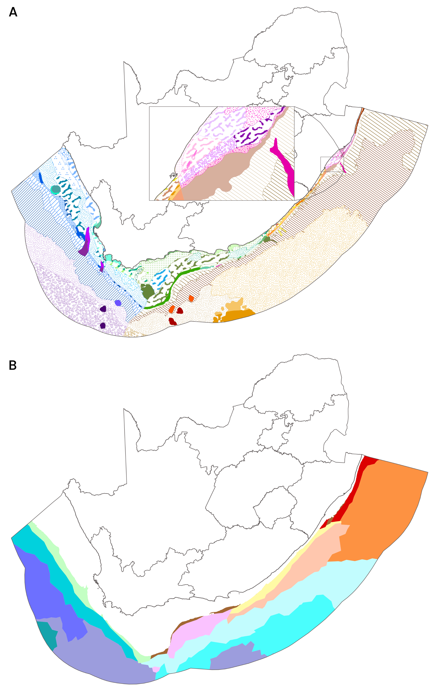
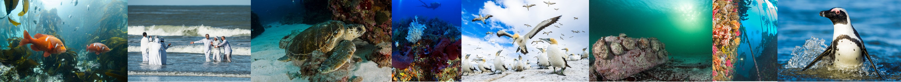
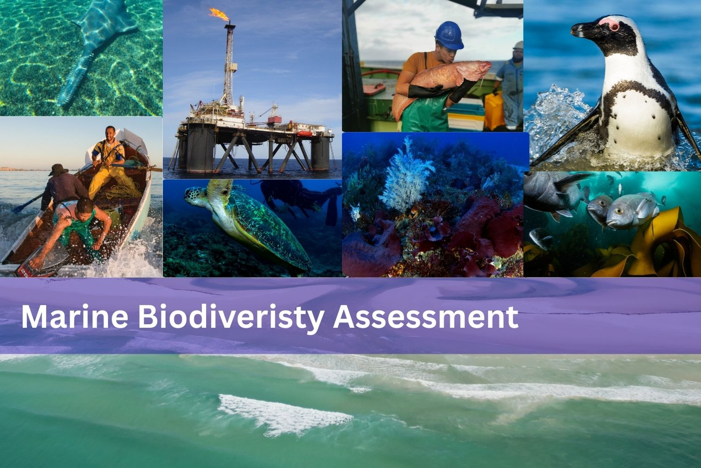
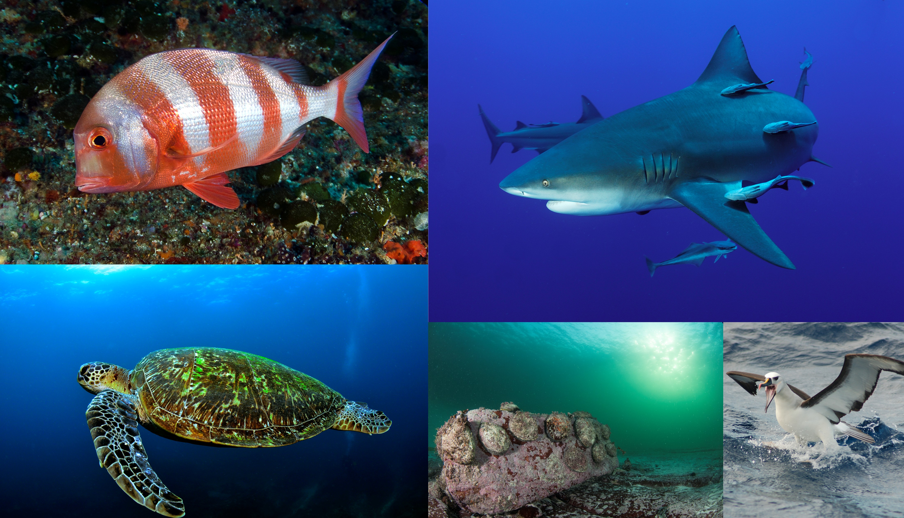
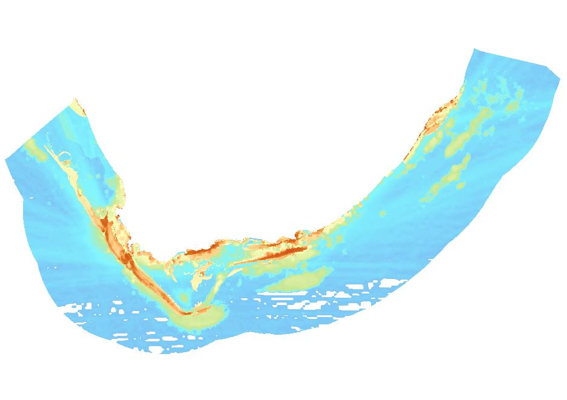
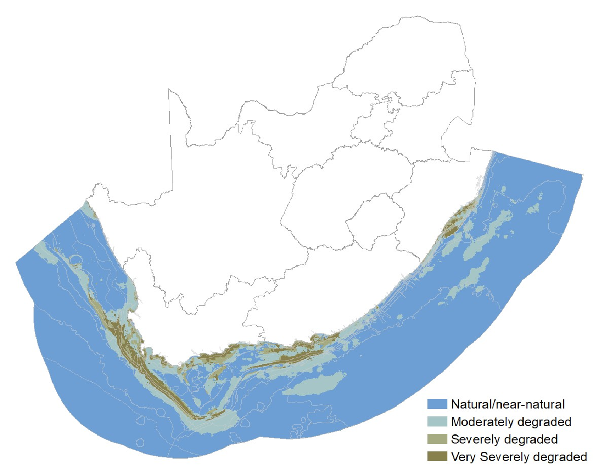

South Africa has exceptional marine biodiversity with 163 marine ecosystem types and high marine endemism linked to the intersection of three oceans and two contrasting current systems interacting with a diverse topographic and geological setting. Our marine biodiversity underpins food and job security, an expanding ocean economy, and is part of the deep cultural and spiritual values of South Africa’s oceans. The 2025 National Biodiversity Assessment identified key marine ecosystems, species and benefits at risk, and co-developed priority actions to safeguard ocean life and livelihoods, and maintain the many benefits of South Africa’s exceptional marine biodiversity.

45%
of 163 ecosystem types
Threatened
of 163 ecosystem types
Threatened
20%
of 163 ecosystem types
Well Protected
of 163 ecosystem types
Well Protected
17%
of 163 ecosystem types
Not protected
of 163 ecosystem types
Not protected
36%
of 496 taxa assessed
Threatened
of 496 taxa assessed
Threatened

Ecosystem assessments
Of South Africa’s 163 marine ecosystem types, 45% are threatened, particularly smaller ecosystem types of restricted distribution. Several small, high-value ecosystem types are at risk of ecosystem collapse, which could compromise food, job and climate security (link to KMA2).
Overall, coastal and shelf ecosystems are at higher risk of ecosystem collapse, and the most threatened ecosystem functional groups are bays, deepwater biogenic beds, muddy shelves and rocky ecosystems on the shelf. Unless collaborative efforts are made to improve ecological condition in these functional groups, the vital ecosystem services and benefits they provide are at risk (link to KMA2).
More than 80% of South Africa’s 163 marine ecosystem types now have some representation in the MPA network, but only 20% are Well Protected (link to KMB4). Slopes, abyssal plains, muddy and rocky shelves, and open oceans are the most Poorly Protected ecosystem functional groups.
Increasing the extent of South Africa’s marine protected area estate will contribute to improving ecosystem protection levels. Importantly, however, the ecological condition of marine ecosystems in MPAs also needs improvement (link to KMC2) for ecosystem types to advance to Well Protected status. Marine conservation also needs to better consider and involve people (link to KMC1), diversify protection models, and address issues that undermine legitimacy.
In the marine realm, 17% of ecosystem types are both highly threatened and under protected (link to intersection of ets and epl section), prevalent on the West Coast, the western Agulhas Bank shelf edge, the inshore of the Agulhas Bank and parts of the KwaZulu-Natal Bight.
Species assessments
Marine species are assessed in terms of their stock status and threat status (IUCN Red List of Species).
There is increasing knowledge on stock status of resources, with evidence of resource recovery for some species that is linked to improved fisheries and spatial management (link to KMA5). This shows that fish stocks can recover with effective collaborative management of effort, catch and area. However, some inshore resources are increasingly depleted, and abalone and west coast rock lobster are Endangered. Illegal fishing is playing a key role in the poor status of these species (link to KMA6).

Of the 497 (update post corals) marine species assessed using the IUCN Red List of Species criteria and thresholds, 36% (update) are considered threatened (link to KMB1). However, this is an inflated estimate of the actual proportion of marine taxa that are threatened because species that are at risk and/or economically important have been prioritised for assessment, with few marine taxonomic groups being comprehensively assessed.
Sharks, rays and chimaeras are one of the most threatened groups across all realms with 41% being threatened (link to shark page). A re-assessment of South Africa’s seabreams (link to seabream page) show 10 (24%) of the 42 assessed seabreams are threatened, but three seabreams have improved in terms of threat status and two have become more threatened. Of the 128 (may need update) South African shallow reef building corals assessed globally, 34% are threatened by climate change (link to KMA1).
Increased extinction risk for marine species is attributed to multiple pressures (link to pressures?), with overfishing (including by industrial, recreational and illegal fisheries), lethal shark control measures, coastal mining, estuarine degradation, flow reduction, climate change and pollution contributing most to the threatened status of marine species.
Marine species continue to have the highest levels of data deficiency across all realms, signalling the need to address knowledge gaps, improve monitoring (link to KMC3), and increase capacity for marine species red listing (link to KMC3). High levels of data deficiency compromise effective species and ecosystem management, spatial planning, and decision-making.
Pressures and condition
There are many interacting pressures cumulatively affecting marine ecosystems and species. The main pressures impacting marine biodiversity include fishing, coastal development (including ports and harbours), pollution, shipping, freshwater flow reduction, lethal shark control and climate change.
Fishing, petroleum activities and shipping are widespread sectors resulting in many pressures on multiple ecosystem components and species. Fishing, particularly industrial fishing, continues to exert the greatest pressures on marine biodiversity (link to KMA5) impacting ecosystems, species and genetic diversity (link to KMB3).

Hotspots of degradation and cumulative impacts are often driven by the location of ports and harbours, which increase access for fishing, alter shorelines and circulation, increase pollution, and facilitate the introduction and spread of invasive species. Pollution including chemical, agricultural, municipal and noise pollution are key escalating pressures. Seismic surveys to detect potential offshore oil and gas resources have been expanding into deeper waters and, together with shipping and other sources of underwater noise, pose uncertain risks to marine ecosystems. Renewable energy installations xxx
Despite their importance in spatial planning, most marine pressure data are outdated, leading to missing pressures, poor resolution of some pressures, and underestimation of pressure impacts on ecosystem condition. Consequently, the first groundtruthing of marine ecosystem condition shows that pressure mapping is an effective proxy at broad national scales, but that finer scale pressure mapping can improve condition estimates. Increased monitoring is needed to support assessment of ecosystem and species (link to KMB5), and to quantify ecological condition more accurately for both biodiversity assessment and guiding management.
The impacts of cumulative pressures also warrant consideration at multiple scales, particularly in evaluating the impacts of expanding and diversifying ocean economy activities. Failure to account for indirect and cumulative impacts will mean that potential impacts are missed and poor spatial planning and decisions are likely, with negative impacts on people and the environment (link to KMA2).

Priority actions and areas
Drawing from the key findings of this assessment, a number of priority actions were co- developed to improve the state of marine ecosystems and species. Science-policy workshops and other engagements were held to bring researchers, decision makers and knowledge holders together to consider evidence and make joint recommendations to address findings.
More than 70 (update) individual actions were advanced (link to priority action page), and have been packaged into broad areas of action, with several indicators developed to support tracking progress in identified actions to improve the state of marine biodiversity in South Africa.
Spatial biodiversity priority areas (link to CBA map) to protect, restore and recover marine ecosystems and species have been identified, and are being improved with increased participation, collaboration, and technical innovation.
(note- knowledge gaps? End)

Key publications
Sink, K.J., van der Bank, M., Majiedt, P.A., Harris, L., Atkinson, L. & Karenyi, N., 2019. National Biodiversity Assessment 2018: Technical Report Volume 4: Marine Realm. Pretoria: South African National Biodiversity Institute.